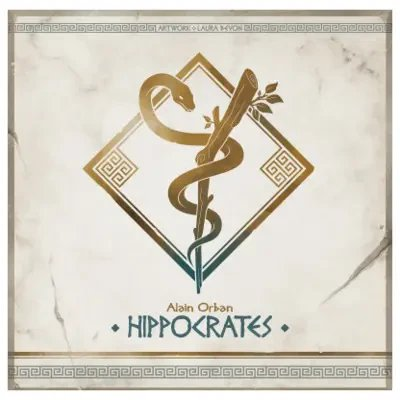

Hippocrates
- 1 – 4giocatori
La biblioteca lo sta catalogando. Fra poco sarà sullo scaffale.
Regolamento lungo e preparazione corposa. Si mette in conto la serata.
Ogni turno accogliete pazienti che avrebbero tutti bisogno di cure urgenti, ma potete curarne solo alcuni: scegliere chi lasciare in sala d'attesa vi costa reputazione. E se dimenticate di pagare i vostri dottori, se ne vanno — proprio quando servono di più.
Si mandano i propri dottori a occupare i posti disponibili prima degli altri — come essere i primi della fila — gestendo le scorte dell'ospedale.
Per chi vuole saperne di più
Tipologia
Piazzamento lavoratori · Gestione risorse · Piazzamento tessere
Cosa c'è nella scatola
1 Tabellone bifacciale · 6 dadi Welcome · 90 Fiale Medicina (30 Pozioni, 30 Erbe, 30 Unguenti) · 60 Monete Dracma (20 da valore 2, 40 da valore 1) · 12 gettoni Assistente (4 per ciascuno dei 3 tipi) · 30 Kit Medicina · 30 Tessere Conoscenza · 72 Pazienti (12 per ciascuna delle 6 regioni) · 30 Dottori (5 per ciascuna delle 6 regioni) · 4 Plance Giocatore · 4 Dottori Base · 4 Segnalini Welcome · 4 gettoni Opzione · 4 Segnalini Reputazione · 4 Segnalini Punti Vittoria · 4 gettoni 50/100+ PV (1 per colore) · (regolamento in inglese)